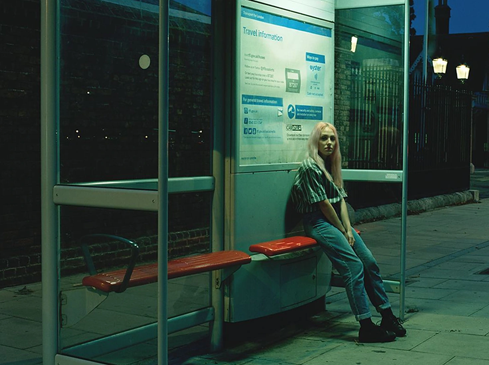
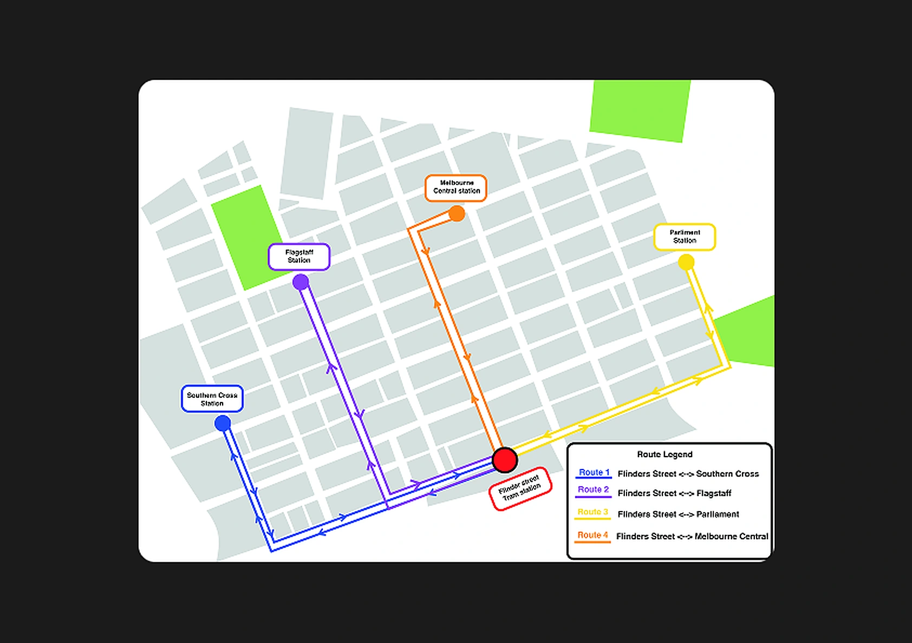
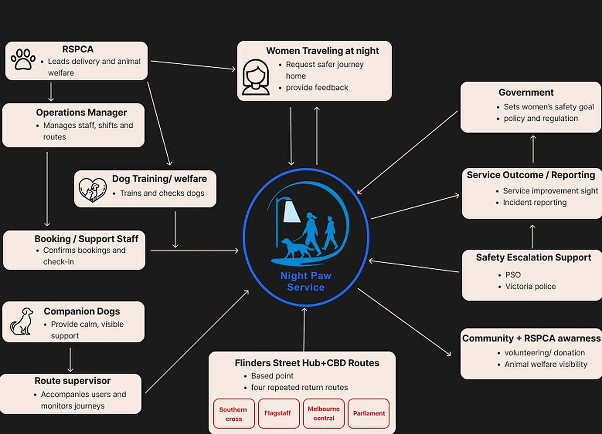
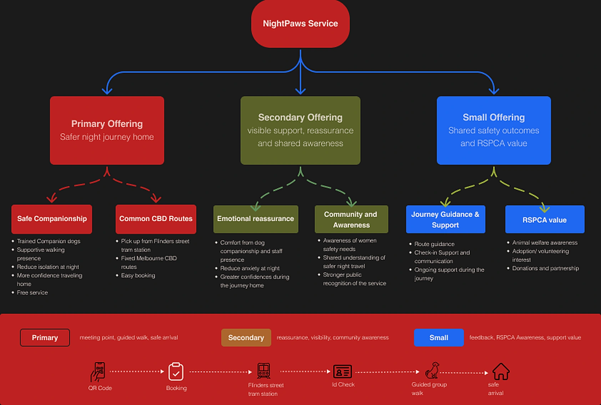
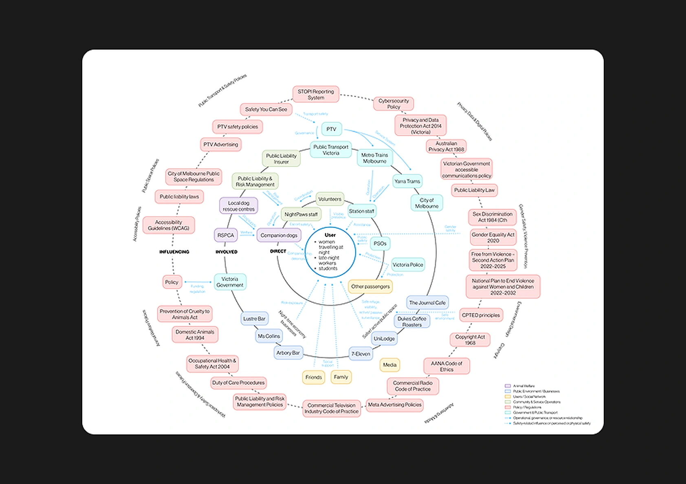
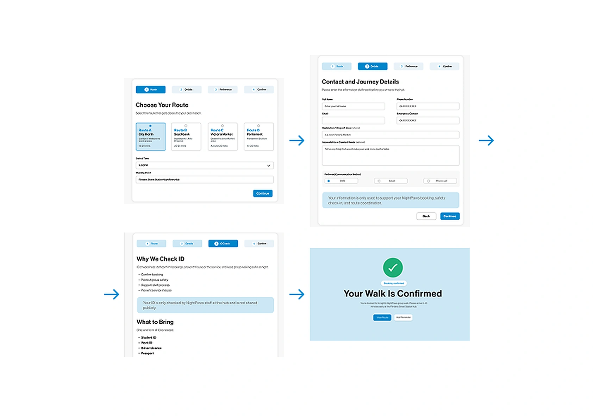
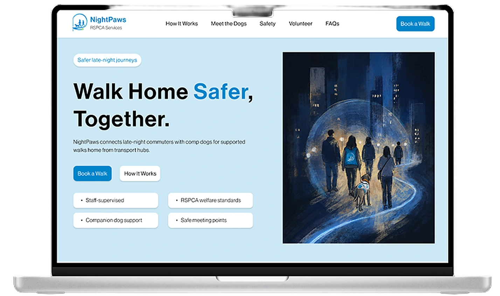
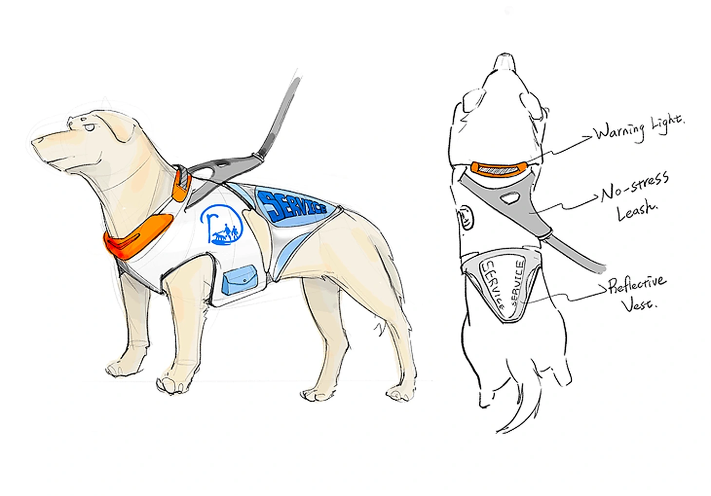
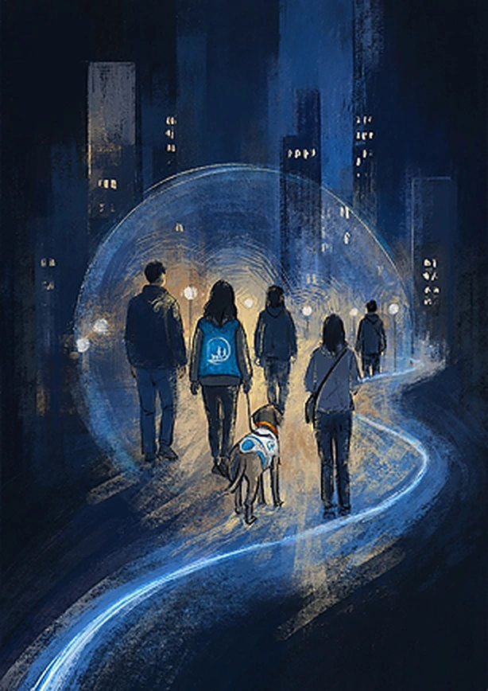

NIGHTPAWS
The station is not the destination.

PROBLEM
The final walk between a transport hub and a destination is the most underserved moment in Melbourne's public transport network. Stations offer safety. Streets do not. Many Australian women avoid walking alone after dark, and some avoid going out at night entirely. Existing infrastructure ends at the platform. What follows is unmonitored and walked alone. The gap between the safety of a station and the safety of a destination is not a perception problem. It is a design problem.

PROPOSED SOLUTION
NightPaws Walk Network covers the final leg of the night-time journey. Operating on fixed routes from Flinders Street Station through the Melbourne CBD, the service pairs commuters with trained staff, volunteers, and companion dogs at scheduled intervals, creating visible, community-backed movement through streets that would otherwise be walked alone. Rather than adding surveillance or infrastructure, NightPaws adds human presence, the one thing research consistently identifies as the most effective deterrent to risk at night.
PROCESS

Research came first. Through primary and secondary investigation into night-time commuting behaviour, pedestrian safety data, and on-site conditions across Melbourne's CBD, the team built a precise picture of the problem lived and why existing systems failed to address it. That foundation drove the development of a full suite of maps, covering the site, the service, the stakeholders, and the journey, each one translating a research insight into a design decision before any concept took shape.

Maps the end-to-end operational structure of NightPaws, from transport hub pickup through fixed walking routes to safe drop-off points, illustrating how staff, volunteers, companion dogs, and commuters move through the service together.

Defines the three tiers of the NightPaws service proposition: the primary offering of a safer night-time journey, the secondary offering of visible community presence and reassurance, and the broader social value generated through RSPCA partnership and animal welfare alignment.

Charts the relationships between every party with a stake in NightPaws, from commuters and volunteers through to Metro Trains, Transport Victoria, and RSPCA Victoria, identifying where interests align and where the service creates shared value across organisations.
DELIVERABLES


OUTCOME


IMPACT
NightPaws addresses a documented and statistically significant safety gap in Melbourne's public transport network, targeting the one part of the night-time journey existing infrastructure does not reach. The concept demonstrates a scalable, low-cost service model with viable partnership pathways across Metro Trains Melbourne, Transport Victoria, and RSPCA Victoria, three organisations whose existing mandates align directly with the service's safety, transport, and animal welfare pillars.
MY CONTRIBUTION
As the team's primary researcher, I led the investigation that shaped every design decision in the NightPaws concept. Through primary and secondary research into night-time commuting behaviour, pedestrian safety data, and on-site conditions across Melbourne's CBD, I built the evidential foundation the team designed from. I translated those findings directly into the project's mapping suite, developing the service system map, stakeholder map, and offering map that defined the operational structure of the service, connected its stakeholder relationships, and articulated its value across three distinct tiers of impact.
TEAM
- Yilu Wu
- Kimmy
- Junian Wu
- Manu Padmaraagam
- Hsun-Yu Chang